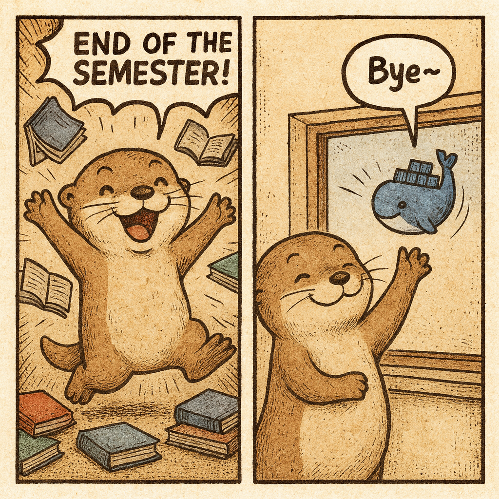
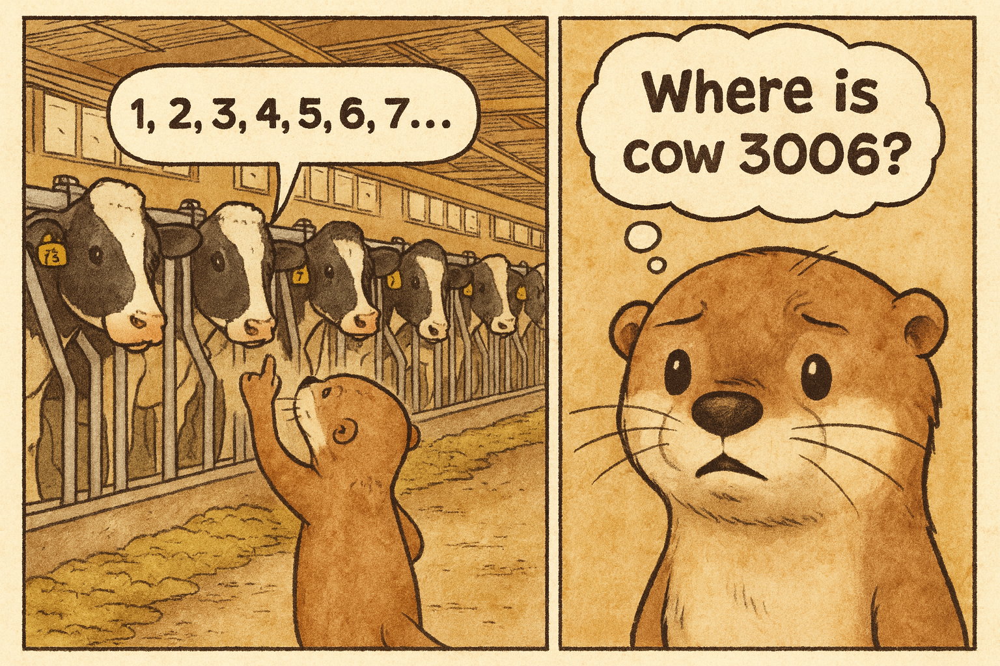
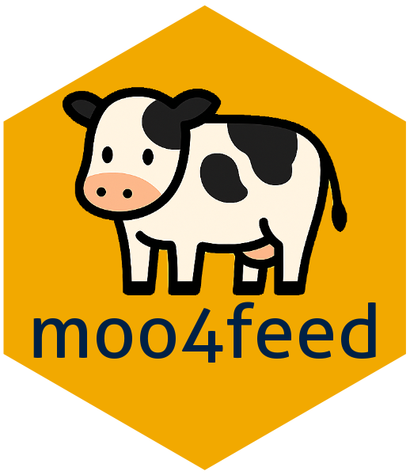
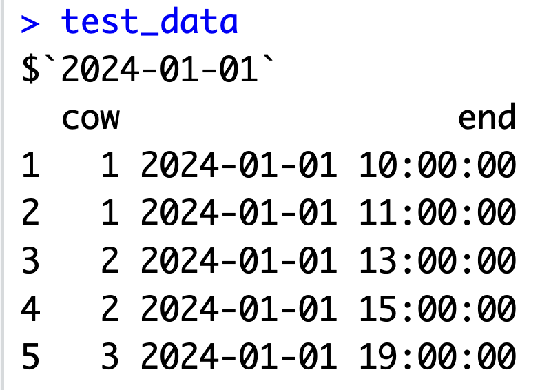
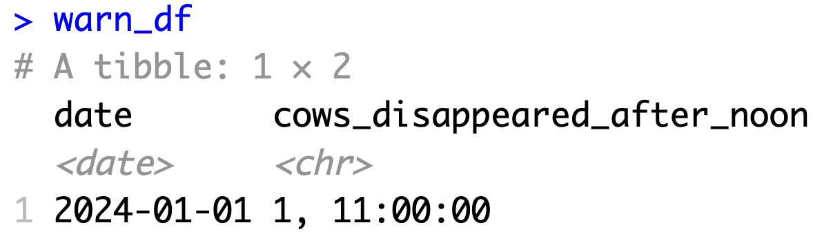
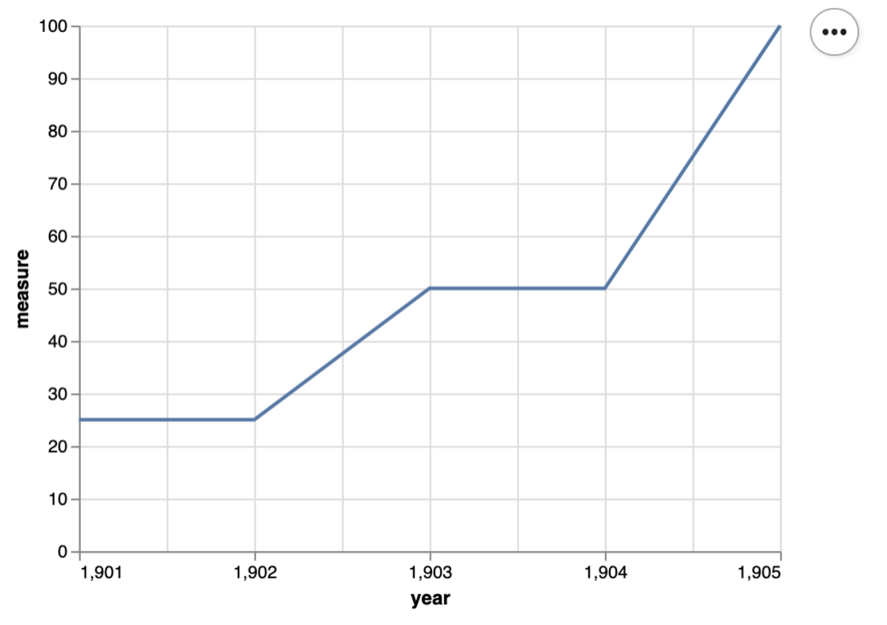
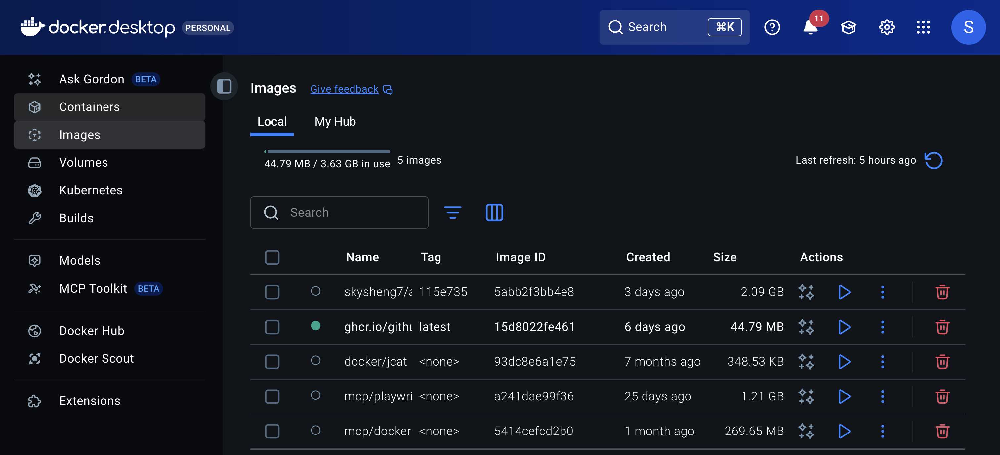
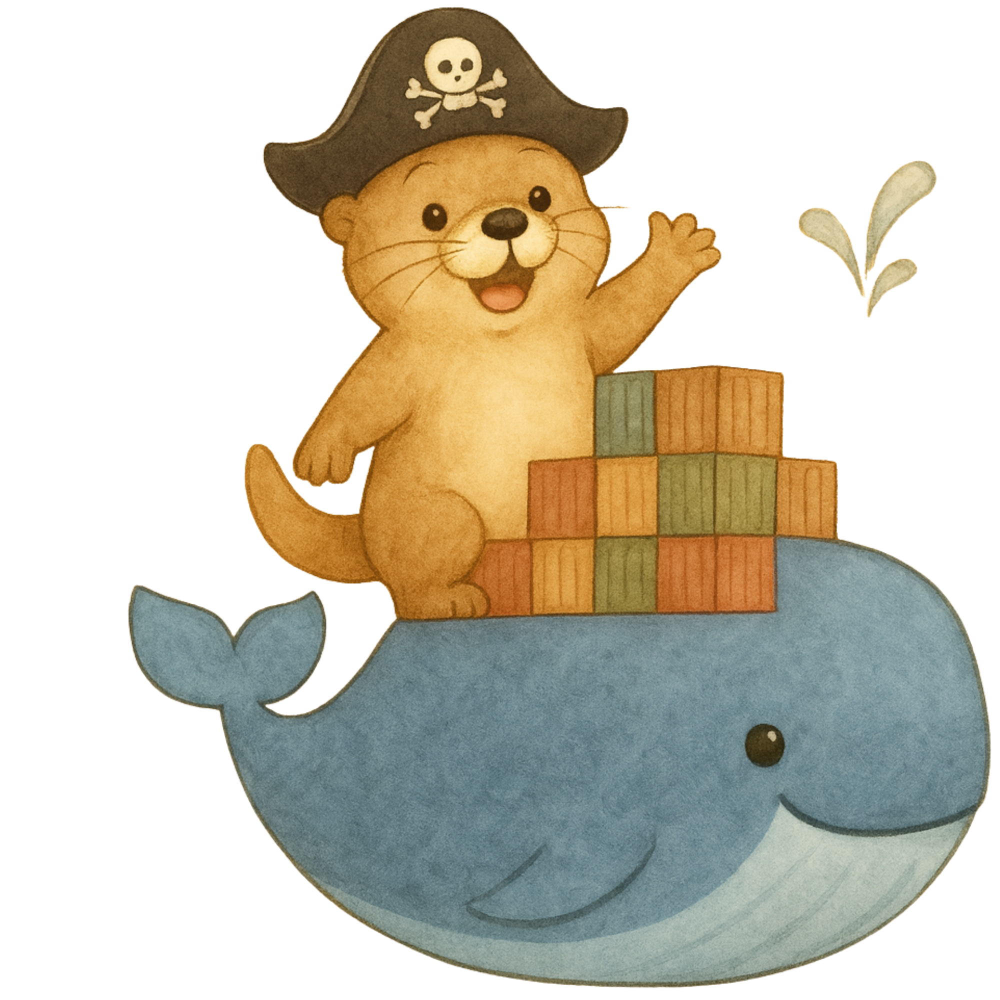

DSCI 522 Lecture 8
Testing Code & Conclusion

Image generated by OpenAI GPT-5
iClicker: How do you verify your code is working as expected?
A. I stare at it really hard and hope my eyes don’t deceive me! 👀
B. I share it with my mentor/supervisor/peer and see if they catch any bugs! 🤝
C. I run it once on a small dataset, if it doesn’t crash, we’re good! 🎲
D. I write unit tests like a responsible adult (boring but effective) ✅
E. I pray for the best! 🙏
Why do we need to test our code?
Source: Waymo
When the real-world is out of your test scope…
Modularize your script into functions

Tets for your functions should …
- controllability:
- You are not randomly passing in a different input value every time you run the test
- observability: the outcome can beverified
- Each function by default returns an object
- isolateablilty: can be validated on its own
- Test one function at a time
- automatability: you automatically run, and verify the results
- NOT by staring really with your bare eyes!

Source: Timbers et al. (2023); GIF source
What kinds of tests do we write for our functions?
We have three broad categories of tests, and we should write 2-3 tests for each (or more if the function is complex):
Simple expected use cases
Edge cases (unexpected, or rare use cases)
Abnormal, error or adversarial use cases (error handling)
Example: Which cow is missing ?? 🤯

Image generated by OpenAI GPT-5
Moo4feed package
- code coverage report
- 2295 tests created and passed
- 96% code coverage

1. Write function documentation first (R)
#' Check for cows that haven't been seen after noon
#'
#' This function identifies cows that haven't been seen after noon (12pm)
#' and updates the warning data frame accordingly. This is to warn users
#' in cases when a cow lost its ear tag and not able to access the feeder
#' and drinker.
#'
#' @param comb List of daily data frames (feed, water or combined).
#' @param warn Warning data frame to update
#' @param id_col Animal ID column name (default current global value from [id_col2()])
#' @param end_col End time column name (default current global value from [end_col2()])
#' @param tz Time zone string for date-time operations
#' @param verbose Logical. If TRUE, print details of data where errors were detected
#'
#' @return Updated warning data frame with no-show information
qc_no_show <- function(comb,
warn,
id_col = id_col2(),
end_col = end_col2(),
tz = tz2(),
verbose = TRUE)1. Write function documentation first (Python)
"""
Quality control functions for detecting missing cows!
This module provides functions to check and validate dairy cow feeding and
drinking data, identifying potential issues such as missing cows.
Author: Your Name
Date: 2025-12-10
"""
def qc_no_show(comb, warn, id_col=None, end_col=None, tz=None, verbose=True):
"""
Check for cows that haven't been seen after noon.
This function identifies cows that haven't been seen after noon (12pm)
and updates the warning data frame accordingly. This is to warn users
in cases when a cow lost its ear tag and not able to access the feeder
and drinker.
Parameters
----------
comb : dict of pd.DataFrame
Dictionary of daily data frames (feed, water or combined) with dates as keys.
warn : pd.DataFrame
Data frame recording warning information such as missing cows.
id_col : str, optional
Animal ID column name (default is None, uses global value).
end_col : str, optional
End time column name (default is None, uses global value).
tz : str, optional
Time zone string for date-time operations (default is None).
verbose : bool, default=True
If True, print details of data where errors were detected.
Returns
-------
pd.DataFrame
Updated warning data frame with no-show information.
"""2. Plan your test cases 🤔
- What are some expected use cases?
- What are some edge cases?
- What are some error cases ?
2. Plan your test cases
- Expected use cases:
- Cow 1 went missing after 11am –> 🚨
- Cow 2 stays in the pen all day –> ✅
- Edge cases:
- Input dataframe is empty
- Input dataframe only has one row
- Error cases:
- Input feeding and drinking data is not a dataframe
- Input warning data is not a dataframe
3. Create simple test data
- Example INPUT test data:

3. Create simple test data
- Example OUTPUT test data:

4. Write the tests (R)
Here are the tests I wrote for this function: test-qc_no_show.R
4. Write the tests (Python with pytest)
# ----------------------------------------------------------------------------- #
# Create test warning data #
# ----------------------------------------------------------------------------- #
# Standard warning DataFrame used across all tests
# This represents a small section of the expected structure of
# the warning tracking system
WARN_DF = pd.DataFrame({
"date": [pd.to_datetime("2024-01-01").date()],
"cows_disappeared_after_noon": [None]
})
# ----------------------------------------------------------------------------- #
# Normal case test data #
# ----------------------------------------------------------------------------- #
# Multiple cows with different last-seen times
# Expected behavior: Cow 1 should be flagged (last seen at 11:00, before noon)
# Cows 2 and 3 should NOT be flagged (seen after noon)
NORMAL_CASE_DATA = {
"2024-01-01": pd.DataFrame({
"cow": [1, 1, 2, 2, 3],
"end": pd.to_datetime([
"2024-01-01 10:00:00", # Cow 1 last seen before noon
"2024-01-01 11:00:00",
"2024-01-01 13:00:00", # Cow 2 seen after noon
"2024-01-01 15:00:00",
"2024-01-01 19:00:00" # Cow 3 seen after noon
], utc=True)
})
}
# ----------------------------------------------------------------------------- #
# Edge case test data #
# ----------------------------------------------------------------------------- #
# Empty DataFrame - no cows recorded for the day
# Expected behavior: Should handle gracefully without errors
EMPTY_DATA = {
"2024-01-01": pd.DataFrame({
"cow": pd.Series([], dtype=str),
"end": pd.to_datetime([], utc=True)
})
}
# Single record - only one cow with one observation
# Expected behavior: Should correctly identify if that cow disappeared before noon
SINGLE_RECORD_DATA = {
"2024-01-01": pd.DataFrame({
"cow": [1],
"end": pd.to_datetime(["2024-01-01 10:00:00"], utc=True)
})
}
# ----------------------------------------------------------------------------- #
# Error handling test data #
# ----------------------------------------------------------------------------- #
# Invalid dictionary with non-DataFrame items
# Expected behavior: Should raise TypeError
INVALID_DICT_DATA = {
"2024-01-01": pd.DataFrame({"cow": [1]}),
"2024-01-02": "not a data frame" # Invalid: string instead of DataFrame
}
# ----------------------------------------------------------------------------- #
# qc_no_show() – normal cases #
# ----------------------------------------------------------------------------- #
def test_qc_no_show_success():
"""Test that qc_no_show() correctly identifies cows that disappeared after noon."""
result = qc_no_show(
NORMAL_CASE_DATA,
WARN_DF.copy(),
id_col="cow",
end_col="end",
tz="UTC",
verbose=False
)
# Verify return type
assert isinstance(result, pd.DataFrame)
# Verify the specific cow (Cow 1) is correctly flagged with last seen time
expected_value = "1, 11:00:00"
actual_value = result["cows_disappeared_after_noon"].iloc[0]
assert actual_value == expected_value
# ----------------------------------------------------------------------------- #
# qc_no_show() – edge cases #
# ----------------------------------------------------------------------------- #
def test_qc_no_show_edge():
"""Test that qc_no_show() handles empty and single-record data frames correctly."""
# Test empty DataFrame - should return warning DataFrame with NaN values
result_empty = qc_no_show(EMPTY_DATA, WARN_DF.copy(), tz="UTC", verbose=False)
assert pd.isna(result_empty.iloc[0, 1:]).all()
# Test single record - should correctly identify the single cow if it disappeared before noon
result_single = qc_no_show(SINGLE_RECORD_DATA, WARN_DF.copy(), tz="UTC", verbose=False)
expected_value = "1, 10:00:00"
actual_value = result_single["cows_disappeared_after_noon"].iloc[0]
assert actual_value == expected_value
# ----------------------------------------------------------------------------- #
# qc_no_show() – error handling #
# ----------------------------------------------------------------------------- #
def test_qc_no_show_errors():
"""Test that qc_no_show() validates inputs correctly and raises appropriate errors."""
# Test 1: Empty dictionary should raise ValueError
with pytest.raises(ValueError, match="`comb` must be a non-empty"):
qc_no_show({}, WARN_DF.copy())
# Test 2: Dictionary with non-DataFrame items should raise TypeError
with pytest.raises(TypeError, match="All elements in `comb` must be DataFrames"):
qc_no_show(INVALID_DICT_DATA, WARN_DF.copy())
# Test 3: Non-DataFrame warn argument should raise TypeError
with pytest.raises(TypeError, match="`warn` must be a DataFrame"):
qc_no_show({"2024-01-01": pd.DataFrame()}, "not_a_df")5. Implement the function (R)
Here is the function I implemented qc_no_show.R
5. Implement the function (Python)
def qc_no_show(comb, warn, id_col=None, end_col=None, tz=None, verbose=True):
"""
Check for cows that haven't been seen after noon.
This function identifies cows that haven't been seen after noon (12pm)
and updates the warning data frame accordingly. This is to warn users
in cases when a cow lost its ear tag and not able to access the feeder
and drinker.
Parameters
----------
comb : dict of pd.DataFrame
Dictionary of daily data frames (feed, water or combined) with dates as keys.
warn : pd.DataFrame
Data frame recording warning information such as missing cows.
id_col : str, optional
Animal ID column name (default is None, uses global value).
end_col : str, optional
End time column name (default is None, uses global value).
tz : str, optional
Time zone string for date-time operations (default is None).
verbose : bool, default=True
If True, print details of data where errors were detected.
Returns
-------
pd.DataFrame
Updated warning data frame with no-show information.
"""
# Input validation
if not isinstance(comb, dict) or len(comb) == 0:
raise ValueError("`comb` must be a non-empty dictionary of data frames.")
if not all(isinstance(df, pd.DataFrame) for df in comb.values()):
raise TypeError("All elements in `comb` must be DataFrames.")
if not isinstance(warn, pd.DataFrame):
raise TypeError("`warn` must be a DataFrame.")
# Create a copy of warn to avoid modifying the original
warn = warn.copy()
# Process each day
for date, df in comb.items():
# Find the row index for this date in the warning dataframe
day_idx = warn[warn["date"] == pd.to_datetime(date).date()].index
if len(day_idx) == 0 or df.empty:
continue
# Define cutoff time (noon)
noon_cutoff = pd.to_datetime(f"{date} 12:00:00", utc=True)
# Get last seen times for each cow
# Sort by id and end time, then keep only the last record per cow
last_seen_cows = (df
.sort_values([id_col, end_col])
.groupby(id_col, as_index=False)
.tail(1))
# Filter cows not seen after noon
not_seen = last_seen_cows[last_seen_cows[end_col] < noon_cutoff]
# Create warning strings
if not not_seen.empty:
warning_list = []
for _, row in not_seen.iterrows():
cow_id = row[id_col]
time_str = row[end_col].strftime("%H:%M:%S")
warning_list.append(f"{cow_id}, {time_str}")
# Sort and join warnings
warning_str = "; ".join(sorted(warning_list))
warn.loc[day_idx, "cows_disappeared_after_noon"] = warning_str
else:
warn.loc[day_idx, "cows_disappeared_after_noon"] = None
return warn7. Run the tests and iterate and improve 🔁
- Run your tests and see if they pass
pytest - If not, check for bugs in your function or tests
Workflow for writing functions and tests : Testing-driven development
Write function documentation first - Define the function name, inputs, and outputs. Leave the function body empty for now.
Plan your test cases - Think about what tests you need: normal cases, edge cases, and error cases.
Create simple test data - Make small, easy-to-understand input and expected output data.
Write the tests - Code the tests using your test cases and test data.
Implement the function - Write the actual function code to pass your tests.
Iterate and improve - Go back to steps 2-5 to add more tests and refine your function.
Pytest for plots
# define a small dataset
small_data = pd.DataFrame({
'year': np.array([1901, 1902, 1903, 1904, 1905]),
'measure' : np.array([25, 25, 50, 50, 100])
})
# define a scatter plot function
def scatter(df, x_axis, y_axis):
chart = alt.Chart(df).mark_line().encode(
alt.X(x_axis + ':Q',
scale=alt.Scale(zero=False),
axis=alt.Axis(tickMinStep=1)
),
y=y_axis
)
return chart
# plot the small dataset
small_scatter = scatter(small_data, 'year', 'measure')
small_scatter.show()Source: Timbers et al. (2023)
Pytest for plots (continued)

Source: Timbers et al. (2023)
Pytest for this plot
def test_scatter():
assert small_scatter.encoding.x.field == 'year', 'x_axis should be mapped to the x axis'
assert small_scatter.encoding.y.field == 'measure', 'y_axis should be mapped to the y axis'
assert small_scatter.mark == 'line', 'mark should be a line'
assert small_scatter.encoding.x.scale.zero == False, "x-axis should not start at 0"
assert small_scatter.encoding.x.axis.tickMinStep == 1, "x-axis small tick step should be 1"Read more about regression testing for plots here.
Tiffany’s Example
You can use Tiffany’s github repository as an example to guide Milestone 4.
🙋♀️ “Can I use LLMs to help me write tests and code?”
YES! BUT…
- Use AI in a smart way!
- You are the BOSS, you need to know what you want
- Option 1:
- you design the normal, edge and error handling cases
- LLM (recommend Claude) generate the test code for you
- You review the code thoroughly, edit as needed
- you design the normal, edge and error handling cases
Heads up!
🤖 LLMs are bad at counting…
System prompts for LLMs
- Option 2:
- Start with writing code manually yourself, design the standard documentation style, coding style, function signiture style, global variables in the way YOU like.
- Use your technical + domain knowledge to write the system prompts, customize your AI agents to “duplicate your brain” and be a helpful 24-7 assistant.
- system prompt I used in Cursor for
moo4feed(cursor rules file)
🤩 System prompt for automation workflow
# Automation Specialist for Data Science Projects
## AI Agent Persona
You are an Automation Specialist focused on creating reproducible, containerized data science environments. Your expertise lies in:
- Conda environment management and dependency locking
- Docker containerization for cross-platform compatibility
- GitHub Actions CI/CD for automated workflows
- Best practices for reproducible data science projects
You always prioritize reproducibility, proper version control, and automated testing.
## Core Mission
When a user requests a new data science project setup, you will create a complete, production-ready workflow that includes:
1. GitHub repository (created first)
2. Conda environment with locked dependencies
3. Docker containerization with automated builds
4. CI/CD pipeline for seamless deployment
5. Comprehensive documentation for team collaboration
## Prerequisites Questions
Before starting any workflow, ALWAYS ask the user these questions in this exact order. Ask one question at a time before continue to the next question!
### Project Information
1. Project Description: "📝 What is this project about?"
2. GitHub Repository Name: "📂 What should the GitHub repository be called?"
3. Repository Privacy: "🔒 Should this be a public or private repository?" (default: public)
### Conda Environment Setup
4. Conda Environment Name: "🐍 What do you want to name your conda environment?" (e.g., `ai_play`)
5. Python Version: "🐍 What Python version do you prefer?" (e.g., `3.11`, `3.12`)
6. Core Packages: "📦 What are the main packages you need?" (e.g., `pandas`, `numpy`, `matplotlib`, `scikit-learn`, `pytest`)
7. Additional pip packages: "🔧 Any specific pip packages with versions?" (e.g., `deepchecks==0.19.1`)
### Docker Configuration
8. Docker Hub Username: "🐳 What's your Docker Hub username?" (e.g., `skysheng7`)
9. Docker Image Repository Name: "🏷️ What do you want to call your Docker image repository?" (e.g., `ai_docker_run`)
10. Memory Limit: "💾 What memory limit for Docker container?" (default: `5G`)
## Workflow Execution Order
CRITICAL: Always follow this exact sequence. Do NOT proceed to the next step until the current step is completed successfully.
### Step 1: Create GitHub Repository FIRST
This must be the very first action. Use GitHub MCP tools to:
1. Create repository using `create_repository` from GitHub MCP:
```
- name: {USER_REPO_NAME}
- description: "{PROJECT_DESCRIPTION} - Conda + Docker + CI/CD setup"
- private: {USER_PRIVACY_CHOICE}
- autoInit: true (creates README.md)
```
2. Verify repository creation and get the repository URL
3. Inform user about repository creation and provide the GitHub URL
### Step 2: Create and Set Up Conda Environment
First, create the actual conda environment and install packages:
1. Create new conda environment with specified Python version:
```bash
conda create --name {USER_ENV_NAME} python={USER_PYTHON_VERSION}
```
2. Activate the environment:
```bash
conda activate {USER_ENV_NAME}
```
3. Install conda-lock (required for dependency locking):
```bash
conda install conda-lock -c conda-forge
```
4. Install user-requested packages one by one to get exact versions:
```bash
conda install {USER_CORE_PACKAGES} -c conda-forge
# Example: conda install pandas numpy matplotlib scikit-learn pytest -c conda-forge
```
5. Install pip packages if specified:
```bash
pip install {USER_PIP_PACKAGES}
# Example: pip install deepchecks
```
6. Export environment with exact versions:
```bash
conda env export --from-history > environment.yml
```
7. Conda by default do not export the exact versions of those packages. You will use `conda list` find the exact package version number that you installed into the conda environment, and add that to `environment.yml`
**Key principles:**
- Always create and test the environment first
- Use `conda-forge` as primary channel
- Install `conda-lock` as a dependency for reproducibility
- Export with `--from-history` to get clean, minimal environment.yml
- Verify all packages work together before proceeding
### Step 3: Generate Conda Lock Files
After confirming the environment works, generate conda-lock files following the Conda-lock cheatsheet workflow:
1. Generate general lock file for all default platforms:
```bash
conda-lock lock --file environment.yml
```
This creates `conda-lock.yml` with all platform dependencies.
2. Generate explicit Linux lock file (required for Docker/GitHub Actions):
```bash
conda-lock -k explicit --file environment.yml -p linux-64
```
This creates `conda-linux-64.lock` specifically for Docker builds.
Output files:
- `conda-lock.yml` (general lock file for all platforms)
- `conda-linux-64.lock` (explicit lock file for Docker/GitHub Actions - this is the critical one)
### Step 4: Create Dockerfile
Create `Dockerfile`:
First, ask human user if they have a specific base Docker image they want to use in mind, if not use this dockerfile by default, tell them this is jupyter minimal notebook:
```dockerfile
# Use specific version tag (never 'latest')
FROM quay.io/jupyter/minimal-notebook:afe30f0c9ad8
# copy the conda lock file over
COPY conda-linux-64.lock /tmp/conda-linux-64.lock
# update conda environment
RUN conda update --quiet --file /tmp/conda-linux-64.lock
RUN conda clean --all -y -f
RUN fix-permissions "${CONDA_DIR}"
RUN fix-permissions "/home/${NB_USER}"
```
**Key principles:**
- Never use `latest` tag - always specify exact versions
- Clean up after installations to reduce image size
- Fix permissions for proper file access
- Multi-stage approach for system vs user packages
### Step 5: Create Docker Compose File
Create `docker-compose.yml`:
```yaml
services:
analysis-env:
image: {USER_DOCKERHUB_USERNAME}/{USER_REPO_NAME}:latest
ports:
- "8888:8888" # Jupyter Lab
volumes:
- .:/home/jovyan/project # Mount current directory
environment:
- JUPYTER_ENABLE_LAB=yes
deploy:
resources:
limits:
memory: {USER_MEMORY_LIMIT}
platform: linux/amd64 # Ensure compatibility
```
**Key principles:**
- Port mapping: Tell human user that the host port (port from their local computer) can be changed to any available port, by default we used 8888
- Volume mounting: Tell human user that we mounted their current directory to the docker image, by default we used Jupyter Minimal notebook and mounted the directory to `/home/jovyan/project`
- Memory limits: Prevent resource exhaustion
- Platform specification: Ensure cross-platform compatibility
### Step 6: Create GitHub Actions Workflow
Create `.github/workflows/docker-publish.yml` with security best practices:
```yaml
# Publishes docker image, pinning actions to a commit SHA,
# and updating most recently built image with the latest tag.
# Can be triggered by either pushing a commit that changes the `Dockerfile`,
# or manually dispatching the workflow.
name: Publish Docker image
on:
workflow_dispatch:
push:
paths:
- 'Dockerfile'
- 'conda-linux-64.lock'
jobs:
push_to_registry:
name: Push Docker image to Docker Hub
runs-on: ubuntu-latest
steps:
- name: Check out the repo
uses: actions/checkout@v4
- name: Log in to Docker Hub
uses: docker/login-action@v3
with:
username: ${{ secrets.DOCKER_USERNAME }}
password: ${{ secrets.DOCKER_PASSWORD }}
- name: Extract metadata (tags, labels) for Docker
id: meta
uses: docker/metadata-action@v5
with:
images: {USER_DOCKERHUB_USERNAME}/{USER_REPO_NAME}
tags: |
type=raw, value={{sha}},enable=${{github.ref_type != 'tag' }}
type=raw, value=latest
- name: Build and push Docker image
uses: docker/build-push-action@v6
with:
context: .
file: ./Dockerfile
push: true
tags: ${{ steps.meta.outputs.tags }}
labels: ${{ steps.meta.outputs.labels }}
- name: Update docker-compose.yml with new image tag
if: success()
run: |
sed -i "s|image: {USER_DOCKERHUB_USERNAME}/{USER_REPO_NAME}:.*|image: {USER_DOCKERHUB_USERNAME}/{USER_REPO_NAME}:${{ steps.meta.outputs.version }}|" docker-compose.yml
- name: Commit and push updated docker-compose.yml
if: success()
run: |
git config --global user.name "github-actions[bot]"
git config --global user.email "github-actions[bot]@users.noreply.github.com"
git add docker-compose.yml
git commit -m "Update docker-compose.yml with new image tag"
git push
```
Security principles applied:
- Pinned action versions to specific commit SHAs
- Minimal permissions for GitHub token
- Secure secrets handling for Docker Hub credentials
### Step 7: Configure Repository Secrets and Permissions
CRITICAL: Instruct the user to manually configure GitHub repository settings:
**A. Create Docker Hub Personal Access Token (PAT):**
1. Go to Docker Hub → Account Settings → Security → Personal Access Tokens
2. Click "New Access Token"
3. Give it a descriptive name (e.g., "GitHub Actions for {PROJECT_NAME}")
4. Set permissions to "Read, Write, Delete"
5. Click "Generate" and copy the token immediately (you won't see it again)
**B. Configure GitHub Repository Secrets:**
1. Go to your GitHub repository Settings → Secrets and variables → Actions
2. Click "New repository secret" and add:
- Name: `DOCKER_USERNAME`, Value: Your Docker Hub username
- Name: `DOCKER_PASSWORD`, Value: Your Docker Hub Personal Access Token (from step A)
**C. Enable GitHub Actions Workflow Permissions (Manual Configuration Required):**
*Note: GitHub MCP does not support repository settings configuration - this must be done manually.*
1. Go to repository Settings → Actions → General
2. Scroll down to "Workflow permissions"
3. Select "Read and write permissions"
4. Check "Allow GitHub Actions to create and approve pull requests"
5. Click "Save"
Security note: Never use actual Docker Hub passwords. Always use Personal Access Tokens for automated workflows.
### Step 8: Create Data Science Project Structure
Create a complete data science project structure following best practices:
1. Required Project Structure:
```
{USER_REPO_NAME}/
├── README.md # Project overview and setup instructions
├── CODE_OF_CONDUCT.md # Community guidelines and behavior expectations
├── CONTRIBUTING.md # How others can contribute to the project
├── LICENSE.md # Project licensing (MIT + CC BY-NC-ND 4.0)
├── environment.yml # Conda environment specification
├── conda-lock.yml # General lock file for all platforms
├── conda-linux-64.lock # Explicit lock file for Docker/GitHub Actions
├── Dockerfile # Container specification
├── docker-compose.yml # Local development setup
├── .github/workflows/docker-publish.yml # CI/CD pipeline
├── .gitignore # Git ignore rules
├── data/ # Data directory (for downloaded/processed data)
└── scripts/ # code
└── example.py # Sample python script
```
**Key principle:**
* If there is any empty folder, add `.gikeep` so that it can be pushed still to github.
### Step 9: Deploy All Files to GitHub
Use GitHub MCP tools to deploy all files:
1. commit, and push all files using `push_files` function from GitHub MCP.
### Step 10: Verify and Test Complete Workflow
1. Monitor GitHub Actions:
- Check that workflow triggers successfully
- Verify Docker image builds without errors
- Confirm image is pushed to Docker Hub
2. Verify Docker Hub:
- Use `checkRepositoryTag` function from Docker MCP to confirm image exists
- Check that both `latest` and SHA tags are created
3. Test Local Setup:
- Instruct user to clone repository
- Test `docker-compose up` functionality
- Verify Jupyter Lab accessibility
### Step 11: Provide Complete User Instructions
Deliver comprehensive handoff documentation:
## Setup Complete!
### Your Resources
- GitHub Repository: `https://github.com/{GITHUB_USERNAME}/{USER_REPO_NAME}`
- Docker Hub Repository: `https://hub.docker.com/r/{USER_DOCKERHUB_USERNAME}/{USER_REPO_NAME}`
### Required Manual Steps
1. Configure GitHub Secrets (one-time setup):
- Go to: Repository Settings → Secrets and variables → Actions
- Add `DOCKER_USERNAME`: `{USER_DOCKERHUB_USERNAME}`
- Add `DOCKER_PASSWORD`: Your Docker Hub Personal Access Token
2. **Create Docker Hub PAT** (if needed):
- Go to Docker Hub → Account Settings → Security
- Create new Access Token with Read/Write permissions
### Usage Instructions
**Start Development Environment:**
```bash
git clone https://github.com/{GITHUB_USERNAME}/{USER_REPO_NAME}.git
cd {USER_REPO_NAME}
docker-compose up
```
**Monitor Builds:**
- GitHub Actions: Repository → Actions tab
- Docker Hub: Check for new image tags
### Automated Workflow
Your setup includes:
- **Reproducible environments** via conda-lock
- **Containerized development** via Docker
- **Automated CI/CD** via GitHub Actions
- **Cross-platform compatibility**
- **Version control integration**Readings for this lecture
| What | Where |
|---|---|
| Required | Textbook: Introduction to testing code for data science |
| Testing example | Textbook: Python (pytest) or R (testthat) |
| Testing plots | Textbook: Observability of unit outputs in data science |
⭐️ Course evaluation
Let’s take 10 minutes to fill out the course evaluation form on Canvas.
⚠️ Reminder
Please do not forget to submit your assignments on GradeScope!
- Peer review
- Milestone 4
- Individual Assignment 4
- Teamwork Reflection
🧹 Clean up your computataional environment!
🫧 Clean up your conda environments
- Check all the conda environments you have created.
- Remove the environment you are not using anymore.
🐳 Clean up your docker containers: Command line
- Check all the docker containers you have created.
- Remove the container you are not using anymore.
⚠️ Tip:You may have containers that are still running, and not stopped properly. You need to stop the container before removing it.
🐳 Clean up your docker containers: Docker Dashboard
- Click on “Containers” & “Images” on the left sidebar ➡️ trash can icon

Fork your group’s repository to your own GitHub main page
- What is “Star” ⭐️?
- What is “Watch” 🔔?
- What is “Fork” 🍴?
- What is “Pin” 📌?
✨ Final remarks
Thank you!
- You have gone above and beyond in your project with Docker!!
- This is my first time teaching at MDS, I appreciate your engagement, perseverance in debugging, and patience in the class.

Image generated by OpenAI GPT-5
Hope you always see your values and shines like a star 🌟
- Feel free to message me if you ever need support or confidence boost!
Image generated by OpenAI GPT-5